CASE STUDY / 08 · TWO-MONTH RESEARCH PROJECT
Mapping the path for a Diet App.
A research roadmap for moving a diet-plan service toward a broader health experience.
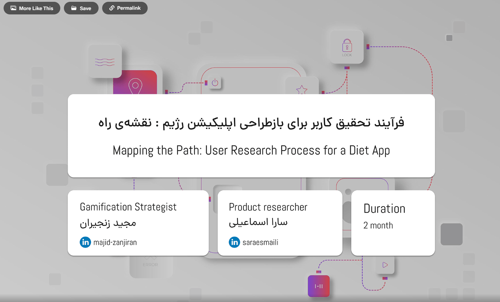
01 / OVERVIEW
Turn scattered evidence into a practical product direction.
The team wanted to explore how a diet-plan product could evolve into a more comprehensive health service. I led the product-research process: framing the context, gathering and organising evidence, defining audience segments and personas, and translating findings into prioritised opportunities and a conceptual structure.
Some project material is intentionally presented at a high level to respect confidentiality.
- My role
- Product Researcher
- Collaboration
- Gamification direction with
Majid Zanjiran - Scope
- Research, segmentation, competitor analysis, synthesis, and information architecture.
- Duration
- Two-month
research project
02 / CONTEXT
Expand the value of the service without losing the clarity of a diet journey.
The first step was to understand what users, internal teams, and the existing product experience could reveal about a broader health platform. Rather than beginning with features, the research focused on needs, behaviours, service gaps, and the practical constraints behind the next product direction.
03 / RESEARCH PROCESS
From discovery to a structured direction
The sequence connects qualitative inputs, behavioural signals, competitive learning, and collaborative prioritisation. Each stage informed the next rather than standing alone.
- 01 Frame the context
- 02 Gather evidence
- 03 Segment audiences
- 04 Define personas
- 05 Analyse patterns
- 06 Prioritise direction
01 / DISCOVERY
Start with the product and the people around it.
I reviewed the product context and spoke with relevant internal teams, including support, sales, and marketing. Multiple-choice and open-ended questionnaires complemented these conversations, providing both structured input and room for unanticipated themes.
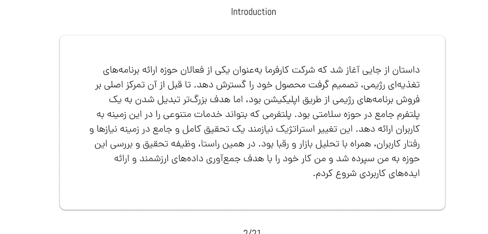
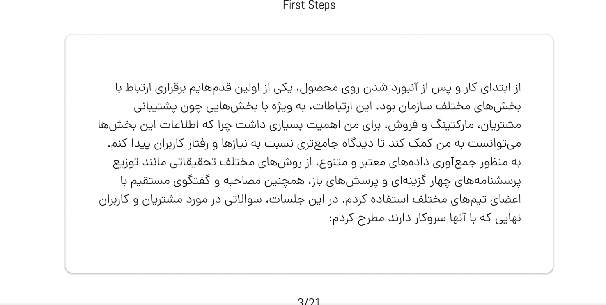
02 / SEGMENTATION
Separate distinct behaviours before designing for them.
Age emerged as a meaningful lens for comparing behaviour and expectations. I used the collected data to organise audience groups, then worked with the support team to make the resulting personas useful for real service conversations—not just presentation artifacts.
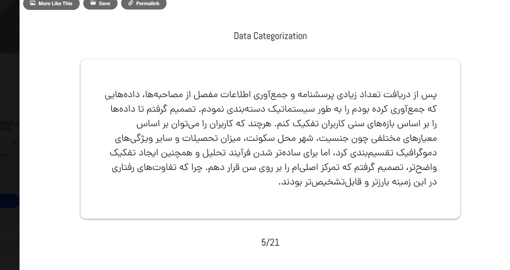
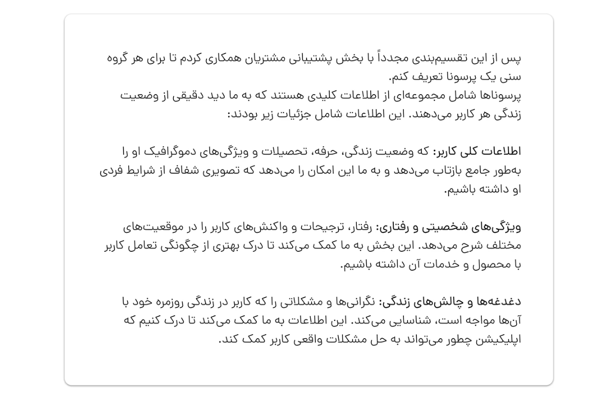
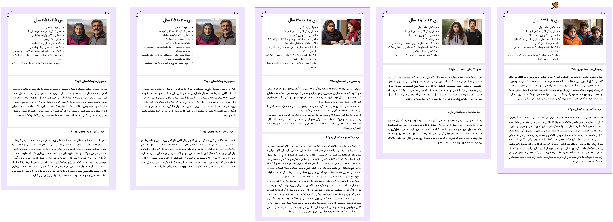
03 / COMPETITIVE REVIEW
Learn from adjacent services and familiar interactions.
The competitor review compared services, UX patterns, and interaction approaches. Its purpose was to identify useful conventions, reveal gaps in the current landscape, and clarify where the product could create a more connected health-service experience.
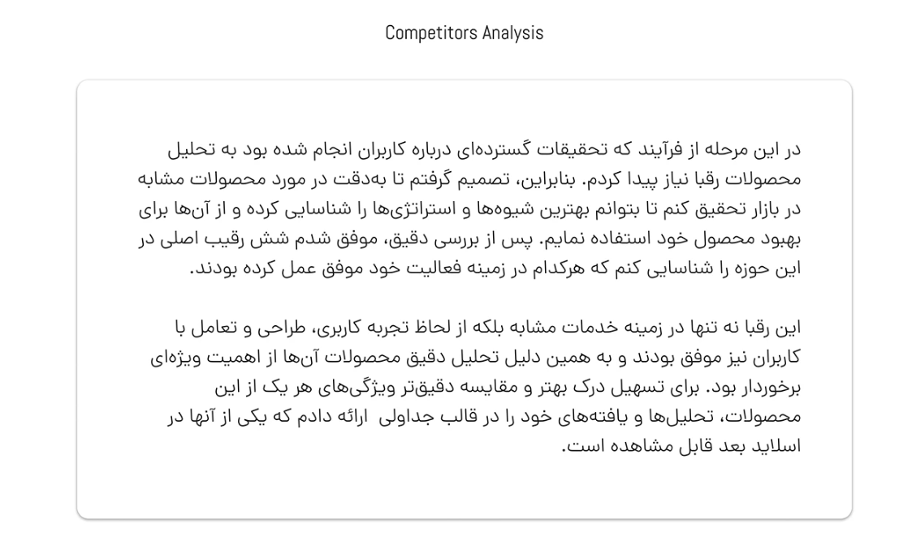
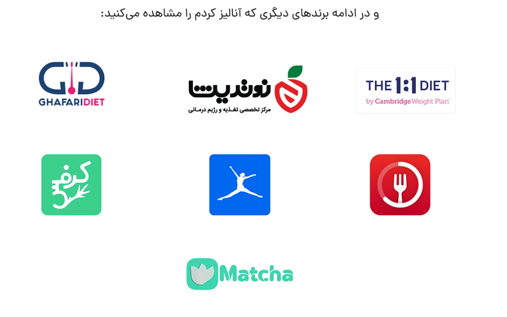
04 / BEHAVIOURAL EVIDENCE
Use real interaction patterns to add context to what people said.
Hotjar and Microsoft Clarity screen recordings were used to observe patterns in the existing experience. These observations added behavioural context to the interview and questionnaire findings, helping the team inspect journeys beyond self-reported feedback.
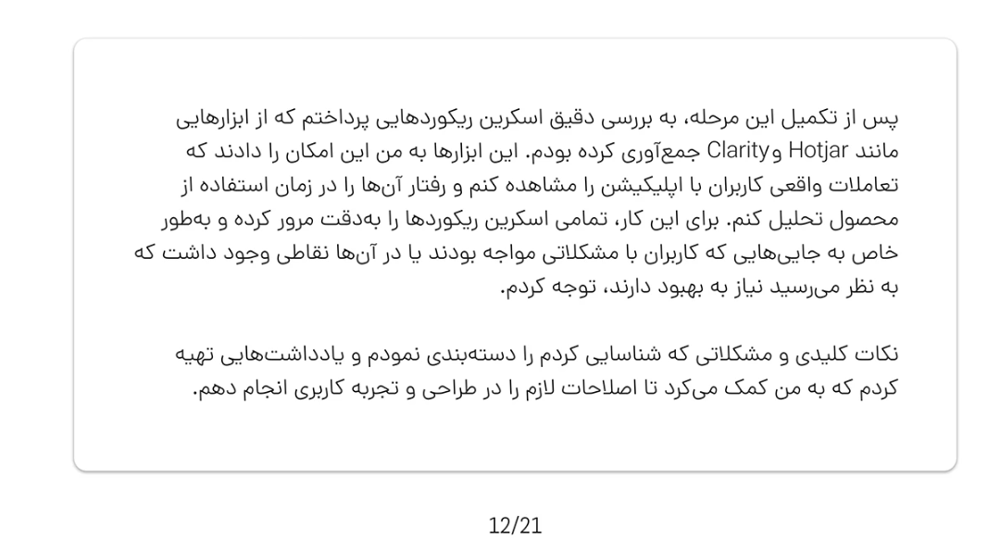
05 / PATTERN MAPPING
Make themes visible before turning them into decisions.
I grouped evidence in an affinity diagram to surface repeated needs, questions, and opportunity areas. This helped create a shared view of the research material before moving into ideation and prioritisation.
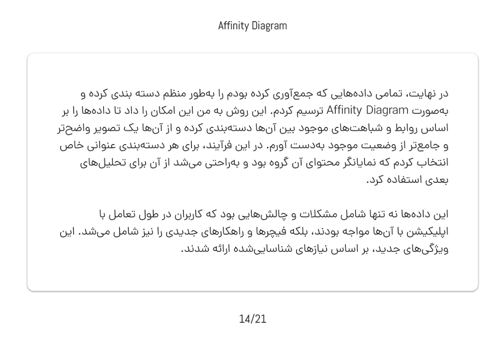
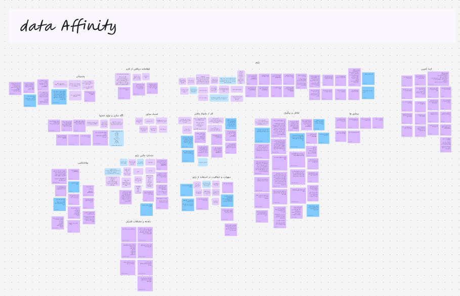
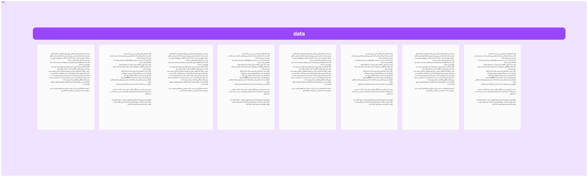
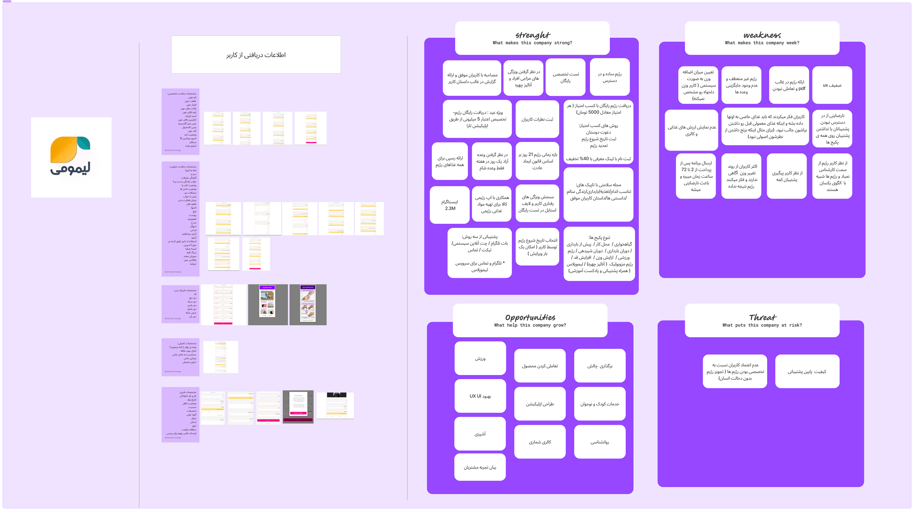
06 / IDEATION
Shape ideas with the people who will carry them forward.
I facilitated brainstorming with the gamification strategist, then reviewed ideas through feasibility, cost–benefit, and priority lenses. The outcome was a clearer direction for which concepts should be explored first and why.
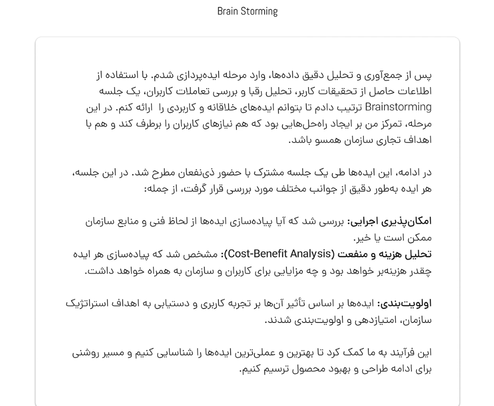
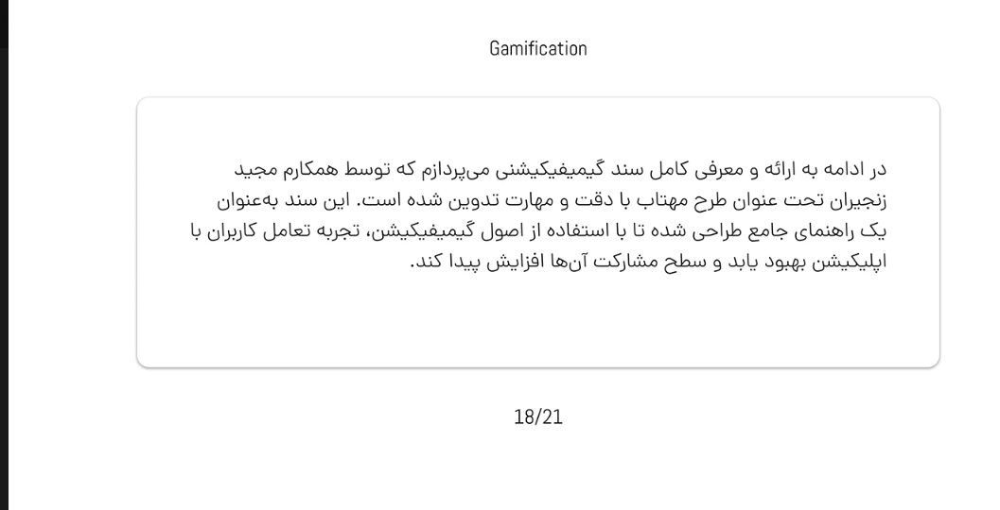
07 / PRODUCT STRUCTURE
Give the next product direction a navigable shape.
The research was translated into a conceptual sitemap and an early app-flow artifact. Together, they made the proposed service structure and key pathways discussable before detailed design work began.
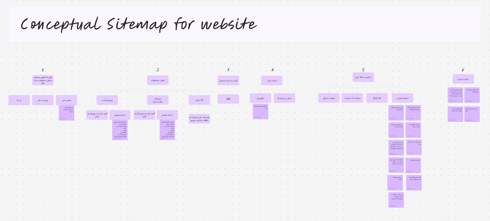
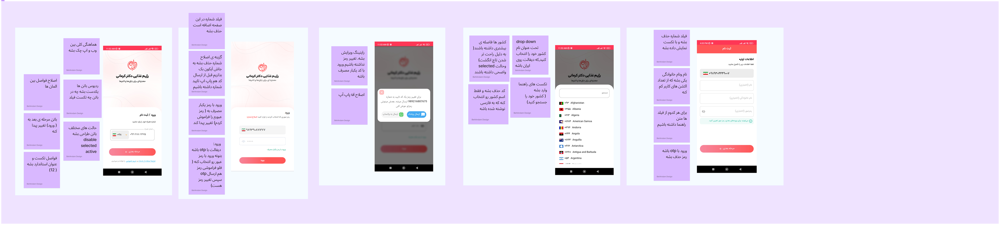
04 / REFLECTION
A roadmap is only useful when it stays connected to evidence.
This work established a shared foundation for a broader health-service direction: research inputs were made legible, patterns were turned into opportunity areas, and the proposed structure gave the team a concrete basis for subsequent product decisions.